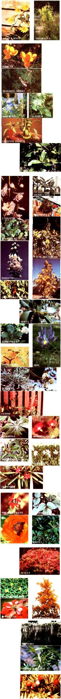
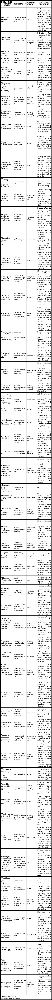

Flower Power: Poison In The Backyard
By Susan Matheny and the Mother Earth News editors
July/August 1984
Watch out! That Garden of Eden you planted may give you
more than you bargained for!

Most of us recognize and avoid poison ivy, and no knowledgeable wild-foods forager would pick a potherb without consulting a reputable field guide. But are you aware that a virtual rogue's gallery of toxic greenery is probably thriving in your own backyard?
The fact is, you're seldom far from a poisonous plant, whether you're on a camping excursion, puttering in a flower or vegetable garden, tending the lawn or shrubbery, or just relaxing indoors. And while most adults can recognize the well-known toxic species, each year many people are inadvertently poisoned-sometimes fatally-by accidentally ingesting or contacting less familiar poisonous plants. Dermatitis, or skin rash, is also very common and may be caused by contact with a remarkably wide variety of plants, including many familiar vegetable species.
A number of these plants are so common-and seemingly innocuous-that most folks don't even suspect that their leaves and flowers harbor deadly compounds. Even so-called "edible" plants can fool us, as one part may be perfectly good to eat, while another is quite poisonous. This is the case with rhubarb, tomato vines, potato plants, and various fruit trees. And though a number of toxic species have a distinctly unpleasant taste (thus making it unlikely that they'd be savored for very long), many dangerous plants are relatively palatable and so may be eaten in quantities sufficient to cause serious poisoning. Children are especially vulnerable in this regard, as they're apt to sample anything that'll fit into their mouths ... particularly attractive-looking-but perhaps deadly-berries.
Obviously, eradicating all the poisonous species from your yard would be impractical and undesirable, since some of the most beautiful and cherished landscape plants are toxic. But you can help prevent accidental poisoning just by becoming acquainted with the species found around your house and garden. The following chart includes a sampling of plants that cause internal poisoning, as well as a few that simply result in skin irritation. By taking note of the dangers present in your favorite greenery, you'll be better able to insure that all your harvests will be enjoyable ones.
|
 |
 |
|